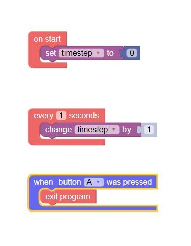
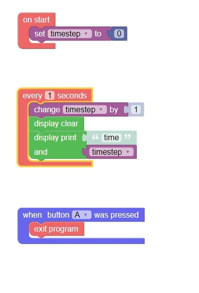
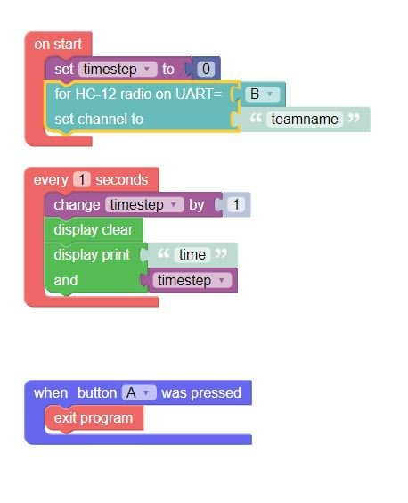
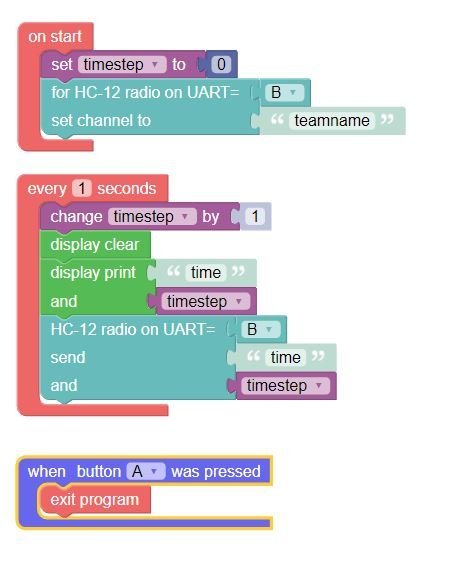
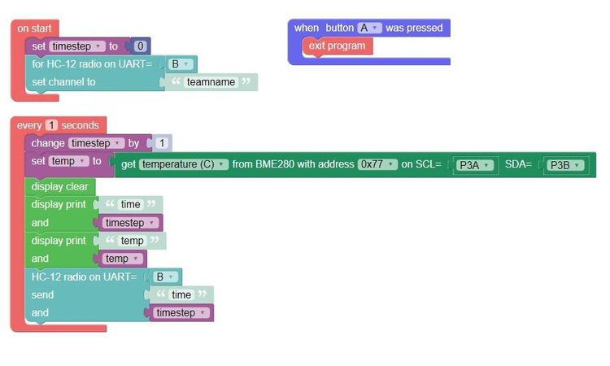
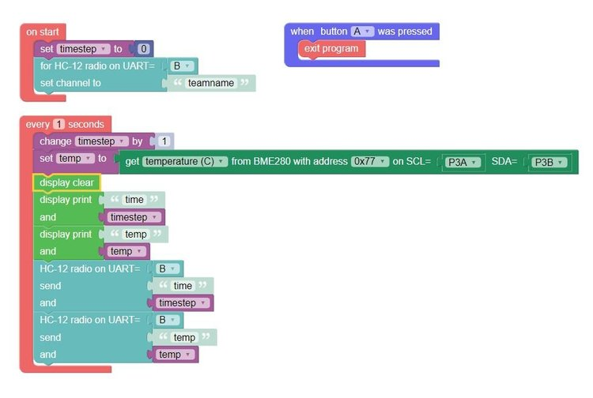
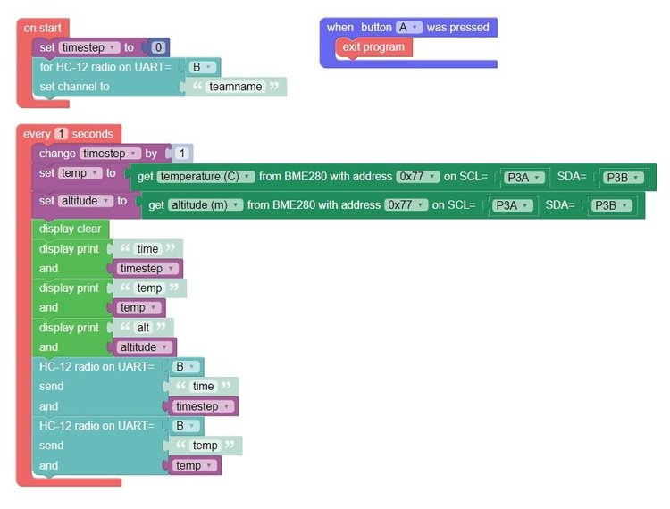
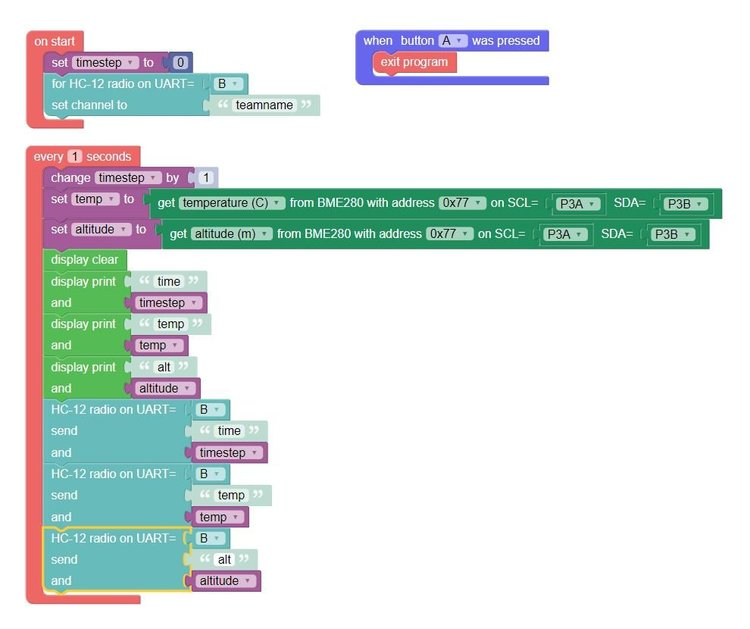

CubeSat Project 2 Instructions
Download the final code here.
Step 1. Create a new project, that has a timestep variable, and exits when button A is pressed, like for project 1.

Step 2. After changing the timestep, clear the display, and print "time" and the timestep variable.

Step 3. In the "on start" block, add a set channel block for the HC-12 radio. The radio should be on UART B, and you should set the channel to your team name.

Step 4. After you print the timestep to the display, send "time" and the timestep on the radio. Remember to set the radio to UART B.

Step 5. Create a new "temp" variable, and use the BME280 sensor to get the temperature. You shouldn't need to change the other settings.

Step 6. Send the temperature over the radio, like you did with the time.

Step 7. Create a new "altitude" variable, and use the BME280 sensor to get the altitude, like you did with the temperature.

Step 8. Send the altitude over the radio, like the others.

This project is now done! You can test it, and go to the base station to see if it is working.